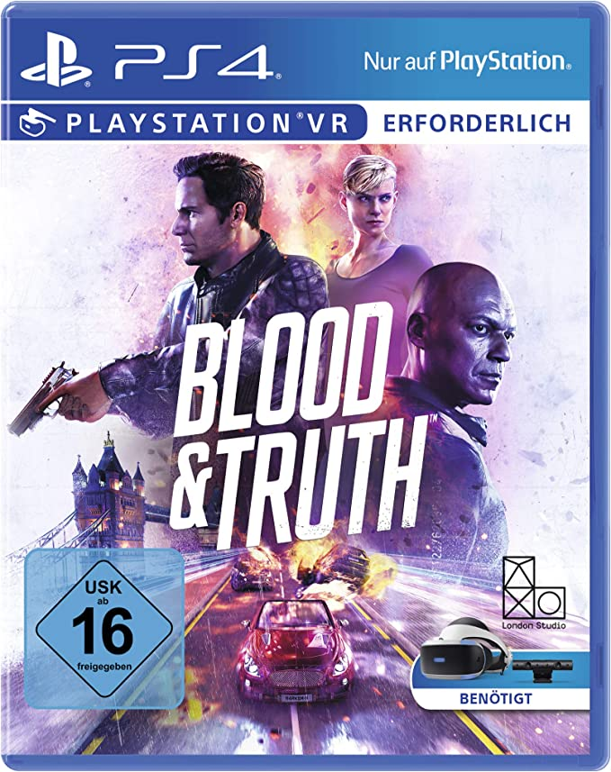

La PlayStation 4, encore en vie commerciale aujourd'hui, a connu de très nombreux jeux divers et variés. Redfire a souhaité participer à cet élan et a pris le temps de développer des jeux.
Les thèmes sont très variés ce qui donne un côté riche et de la profondeur à cette expérience.
On dénombre à ce jour 2 jeux PlayStation 4 répertoriés dans le catalogue ci-dessous :
| Blood and truth | |
|---|---|
| Année de sortie | Juin 2019 |
| Genres | Réalité virtuelle, Première personne, Jeu de tir |
| Prix | 31 euros |
| Description | Sorti pendant les vacances, Blood and Truth passe par la réalité virtuelle pour nous faire explorer nos fantaisies les plus folles. Le personnage a un CDI (Character Design Illustration) qui nous rappelle la violence du monde du jeu, mais aussi son côté réaliste. S'infliger de la violence à soi-même et aux autres est-il un moyen de mieux se comprendre ? Il en faut des jeux comme ça diront certains, mais les personnes sensibles, qui ont une bonne mémoire et pourraient être marqués par ces perceptions, comprennent que ce n'est pas la réalité mais pourraient quand même être en retrait. Le personnage explore le monde et ne sait pas où il va, tandis que dans ce monde violent d'autres restent chez eux et cherchent du réconfort. Dans le but de rechercher une relation authentique avec soi-même et les autres, exprimer cette violence et ces mal-être pourrait être un moyen de mieux se connecter, se faire confiance, d'évacuer ces préoccupations et d'être en phase avec soi-même. Marqué par ce conflit, le joueur continue tout de même son combat pour ce en quoi il croit être juste. |
| Téléchargements | 3 491 610 |
| Lien | https://www.playstation.com/fr-fr/games/blood-and-truth/ |
| Cake Bash | |
|---|---|
| Année de sortie | Novembre 2020 |
| Genres | Action, Multiplayer, Fighting game, Party |
| Prix | 13 euros |
| Description | Les personnages se battent tout le temps mais ils savent qu'ils sont inséparables. Car derrière cet environnement de combat, avec soi-même et avec les autres, chacun des joueurs cherche à être le meilleur de lui-même et le meilleur gâteau du monde. Ce jeu développé en partenariat avec High Tea Frog, nous autorise à rêver et s'ouvrir aux autres sans avoir peur d'être blessé. Au pire on concèdera cette manche mais on sait qu'on passera un bon moment. Jeu à essayer à plusieurs avec un jus d'orange (ou de l'Orangina selon les préférences) pour une meilleure expérience. |
| Téléchargements | 19 123 |
| Lien | https://store.playstation.com/fr-fr/product/EP8936-CUSA20132_00-CAKEBASH00000001 |